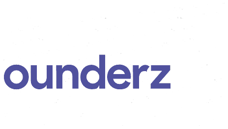
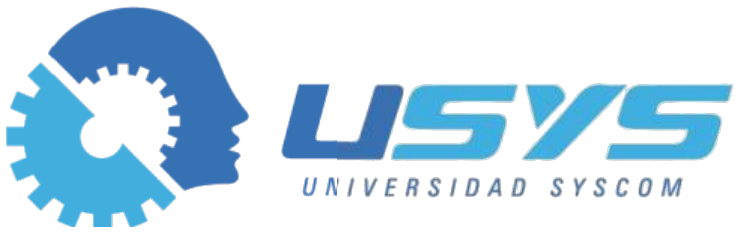
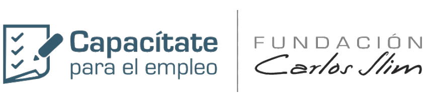

Google | Santander Open Academy
Google: Inteligencia Artificial y productividad
2025
Disponible en Guadalajara y remoto
Soy Gustavo Quintero, desarrollador full stack y líder técnico en Guadalajara. Diseño ERP y SaaS multiempresa con facturación CFDI y seguridad por diseño, les integro inteligencia artificial y opero la infraestructura que los mantiene en línea.
Sistema en operación
Pasa el cursor o toca un nodo para ver qué hago en cada capa.
Normalmente las cubren perfiles distintos. Yo las trabajo todos los días, y cada una hace mejor a las demás.
Backend y frontend para ventas, compras, inventarios, punto de venta y facturación. Código que usan cientos de personas todos los días.
Defino cómo trabaja el equipo de desarrollo y lo acompaño para que entregue con calidad.
No como adorno: la IA resuelve una tarea concreta del usuario y responde en un formato que el sistema puede validar.
Servidores, contenedores, respaldos y seguridad de mis productos. En campo, redes, videovigilancia y telefonía para empresas.
Mis productos nacen protegidos contra los ataques más comunes, y en las empresas cliente cuido sus redes, equipos y respaldos.
Seis años en la misma empresa, empezando en soporte y llegando a líder técnico. En paralelo, mis propios productos.
2022 — hoy
HISSS Informática Aplicada · Guadalajara
2023 — hoy
Alkes, Software y Soluciones TI · proyecto propio
2021 — 2022
HISSS Informática Aplicada
2020 — 2021
HISSS Informática Aplicada
2016 — 2020
Emprendimiento propio
Todos son de Alkes y comparten el mismo núcleo. Cada uno tiene su página, su demo y su historial de versiones.
ERP para pymes mexicanas: ventas, compras, almacén y punto de venta, con 153 reportes en 11 áreas operativas.
CFDI con timbrado y cancelación vía el PAC Finkok, y recepción de XML de proveedores.
Conocer Alkes ERPGestión de pendientes para equipos. Dictas una nota de voz y se convierte en tareas clasificadas.
Whisper transcribe y un modelo GPT responde en JSON, con un cupo mensual de IA por usuario.
Conocer SmartPendGestión de mantenimientos para cualquier activo, pensada para el celular del técnico en campo.
QR por activo, checklists configurables por empresa y reporte PDF de cada servicio.
Conocer MantisControl de asistencia para equipos en oficina o en campo.
Registro con geolocalización y fotografía.
Conocer GeoCheckControl remoto de equipos eléctricos por relevadores, desde cualquier lugar.
Firmware propio para ESP32 con respaldo de Ethernet a WiFi, latido por HTTPS y actualizaciones OTA.
Conocer SysPowerLa infraestructura real de mis productos. La monté, la mantengo, la protejo y la vigilo yo.
Git y GitHub Actions publican cada versión con un push.
Cloudflare con WAF y túnel: el servidor no queda expuesto.
VPS Linux con Coolify, Traefik y Docker: aplicaciones PHP, MariaDB, PostgreSQL, n8n, Nextcloud y correo con Stalwart.
Cifrados con age y verificados con SHA-256, replicados en Francia y AWS S3.
Bots de Telegram avisan de respaldos, despliegues e intentos de intrusión.
Lo que uso en producción. Lo que uso de vez en cuando lleva un punto hueco.
El código de mis sistemas es privado y lo muestro con gusto en una entrevista técnica. Lo que sí puedes revisar ahora mismo son las páginas públicas de cada producto y estos proyectos.
Universidad de Guadalajara, CUCEI. Titulado.
Mi proyecto de titulación: reconocimiento autónomo de sargazo con drones Tello coordinados por un servidor central, y una red neuronal convolucional entrenada con TensorFlow y PyTorch para clasificar las imágenes.
Español nativo, inglés B1.
Cursos y certificados verificables. Abre cualquiera para verlo en PDF.
Google | Santander Open Academy
MIT Professional Education | Santander Open Academy

Microsoft | Founderz | Santander Open Academy
Hacker Mentor
mouredev | BIG school
Linkedpro by epcom

Universidad SYSCOM | SYSCOM
BIG school | BIGSEO

Capacitate para el empleo | Fundación Carlos Slim
Capacitate para el empleo | Fundación Carlos Slim
Capacitate para el empleo | Fundación Carlos Slim
Capacitate para el empleo | Fundación Carlos Slim
Capacitate para el empleo | Fundación Carlos Slim
Santander Open Academy
Santander Open Academy
Capacitate para el empleo | Fundación Carlos Slim
Capacitate para el empleo | Fundación Carlos Slim
Lo que suelen preguntarme reclutadores y empresas antes de la primera llamada.
Gustavo de Jesús Quintero Cerpa es ingeniero en sistemas computacionales por la Universidad de Guadalajara y desarrollador full stack senior. Es líder técnico de desarrollo en HISSS Informática Aplicada, donde lidera VIVO ERP, y diseñó y opera por su cuenta cinco productos SaaS multiempresa. Tiene más de 6 años en TI.
Vive en Guadalajara, Jalisco, México. Trabaja de forma remota, híbrida o presencial en la Zona Metropolitana de Guadalajara, que incluye Zapopan, Tlaquepaque, Tonalá y Tlajomulco.
En producción usa PHP, JavaScript, Python y SQL con MariaDB, MySQL y PostgreSQL; Jaxon, Bootstrap y AdminLTE en el frontend; Docker, Coolify, Traefik y GitHub Actions para desplegar; y OpenAI, Whisper y n8n para inteligencia artificial. También trabaja con Laravel, Redis, Linux, Nginx, Cloudflare y AWS.
Sí. Lidera el desarrollo de VIVO ERP en HISSS y construyó Alkes ERP, con timbrado y cancelación de CFDI vía PAC, complementos de pago, notas de crédito y recepción de XML de proveedores.
Sí. En SmartPend las notas de voz se transcriben con Whisper y un modelo GPT genera tareas en formato JSON, con un cupo mensual de IA por usuario para controlar el costo. También crea agentes con herramientas en n8n y trabaja con servidores MCP.
Sí. Opera sus propios servidores Linux con Docker y Coolify, con Cloudflare, respaldos cifrados y alertas por Telegram. Aplica seguridad por diseño en sus aplicaciones (CSRF, CSP, bloqueo por intentos, Argon2id) y en empresas cliente administra firewalls, segmentación, EDR, redes MikroTik, CCTV y cableado estructurado certificado.
Sí. Desde 2022 está al frente del desarrollo en HISSS como líder técnico: coordina equipos de hasta 10 personas entre desarrollo, QA, soporte e instalación, revisa código, implantó Git en la empresa y participa en la contratación.
Por correo a contacto@gustavoquintero.dev, por LinkedIn o al +52 33 3946 0097. Su CV está disponible en cuatro versiones: completo, desarrollo full stack, tech lead y arquitectura, e infraestructura y DevOps.
Escríbeme y platicamos de tu proyecto o de la vacante. Trabajo remoto, híbrido o presencial en Guadalajara.
contacto@gustavoquintero.devDescarga mi CV en la versión que necesites